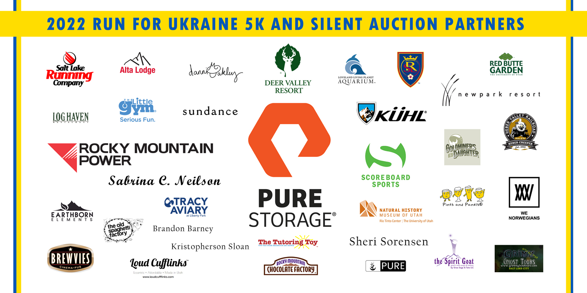
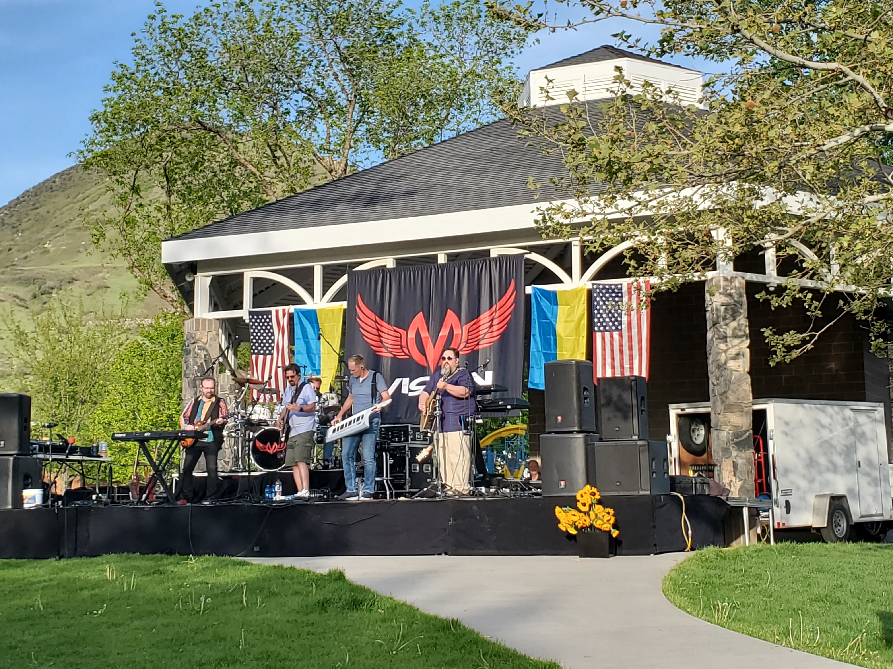

How to Help
1. DONATE TO UTAH UKRAINIAN ASSOCIATION.
100% of the funds go toward critical defense and humanitarian projects in Ukraine.

2. ATTEND OUR FUNDRAISERS
The events are announced on this website and through our facebook page.
Please also help us spread awareness and raise additional support by sharing these events with your
networks.
3. HOLD A FUNDRAISER IN YOUR COMMUNITY, PLACE OF WORK OR SCHOOL
Get in touch with us via facebook
or email - we will be happy to hear your fundraising
ideas and help in any way we can!
We would love it if you would select Utah Ukrainian Association as your beneficiary, but we are also
happy to suggest
other organizations we have thoroughly vetted. If you decide to put together an event benefiting
UUA, we will be happy to help:
- Spread the word
- Provide an event-specific QR code for your flyers, and a post-event report of the funds raised
- Find volunteers for the event if needed
- Provide Ukrainian souveniers for sale if needed
- Help find Ukrainian performers if needed
- If you need assistance or advice with anything else, we'll help as much as we can, or help you
find the right resources :)
4. VOLUNTEER
Please fill out
our volunteer form
and mention any specific areas of interest or skills you would like to offer and your availability.
We will be in touch!
5. DONATE SUPPLIES
Since the start of the full-scale Russian invasion, we have collected and delivered close to 1000 boxes of supplies to Ukraine!
We work with Lifting Hands International and Caritas Mostyska to deliver humanitarian aid.
You can drop off donations at LHI warehouse, 920 E State St, American Fork, 9 a.m. to 1 p.m. Mon-Fri.
For more information, click here. Please note that they can always use volunteers to package and label the boxes,
including writing Ukrainian labels on them. Please consider helping out with this task, this really helps the volunteers at the border!
Utah Ukrainian Association Humanitarian Activity
The following items have been donated by the amazing community in Utah during our March-April
donation drive.
They have been collected, moved, sorted, packed, labeled and inventorized
by UUA volunteers with generous help from Lifting Hands International. Lion Energy has kindly
provided a warehouse space,
and helped palletize the boxes and repalletize them again when the cargo requirements changed.
Our friends from Big Ocean Women included their donations into the shipment as well, collecting some
really critical tactical defense gear.
The items were shipped to Europe, and from there to the Polish-Ukrainian border. During May-early
June, our partners at Caritas have helped
distribute these donations to Bucha, Brovary, Kyiv, Zaporizhzhia, Kharkiv, Chuhuiv, Azov, Dnipro and
Donetsk region, among other places.:
Tactical gear: police vests: 60
Tactical gear: knee pads: 158
Tactical gear: helmets: 20
Tactical gear: plate carriers: 7
Tactical gear: walkie talkies: 121
Medical supplies: syringes/needles: 2319
Medical supplies: tourniquets: 1242
Medical supplies: cold compress: 746
Medical supplies: sanitary strips, dressings: 505
Medical supplies: first aid kits: 330
Medical supplies: IV supplies: 87
Medical supplies: gauze: 3009
Medical supplies: pain relief/medicine: 1011
Medical supplies: disinfecting wipes: 48
Medical supplies: misc: 4365
Emergency supplies: energy thermal blankets: 250
Bedding: sleeping bags: 79
Bedding: blankets: 163
Food items: canned foods: 1688
Food items: dry foods: 1013
Food items: snack boxes/snacks: 1995
Baby items: baby food/formula: 875
Baby items: pedialyte: 254
Clothing: socks: 1076
Clothing: misc: 161
Misc: power banks: 41
...and other misc items in these categories
Community Wellness

The Refugee and Immigrant Center run by the Asian Association has a long history of quality
behavioral health services
for the International community in Utah. Individual therapy, medication management and other
services are available for
individuals in the Utah Ukrainian community, including those who do not have insurance.
These services are available
for those experiencing increased stress, depression, worry, having difficulty sleeping or other
related problems
due to the war in Ukraine. These services are also available for those who may be here visiting
family or friends
and cannot now return home. Services are available in person and via telehealth. If services are
needed in a language
other than English, professional interpreters will be provided.
Call 801-467-6060 or go to
http://aau-slc.org/
or 155 South 300 West, Ste. 101, Salt Lake City, Utah, 84101 to set up services today.
Petition for Refugees

Dear Utahns, we need your help collecting 100,000
signatures for
this petition.
The migration of Ukrainian refugees has prompted swift international and regional responses,
but such momentum is unlikely to sustain itself. Some world entities are already calling the refugee
situation
a ‘humanitarian crisis.’
We ask that the U.S. government waive U.S. visa requirements and/or grant refugee status to the
Ukrainian nationals.
The U.S. government and its constituents can save and shape many Ukrainian lives, which are now
being abruptly
and senselessly destroyed due to the unprovoked invasion of their country. Every day matters, so
please act now!
UUA contributes $10,000
for an Anti-Drone System
for Ukrainian Defenders

Thanks to all the donors and event participants who helped us collect these funds!
Utah Ukrainian Association has collaborated with a Ukrainian nonprofit, Svit Razom, to help purchase
a "Drone Jammer - KVS Antidrone G-6."
This is an effective item in fighting drones approaching the protected area by suppressing drone controlled and navigation channels, which leads to neutralization and landing of the intruder.
To learn more about the project please check out Svit Razom's Program Page
Run for Ukraine Raised $17,000

UUA expresses sincere gratitute to 180 runners, dozens of volunteers and silent auction
participants,
and all the amazing community partners who made this event such a great success.
Thank you Jonathan Freedman and the Ukrainian Honorary Consulate, the Ukrainian national curling
team,
Pure Storage, Rocky Mountain Power, Sabrina Neilson, and to the wonderful Ukrainian performers whose
songs were so touching!
Thank you to all volunteers who helped prep and run the event of this scale, who knocked on many
doors and
helped secure 30+ sponsors for the silent auction. To all organizations and individuals
who responded to our request for help and contributed so generously. To runners who came to
participate from all over,
including Park City, Ogden and Provo.
Our hearts are filled with gratitude and we are so proud to be part of this community.
Let's keep the momentum going and with the help of its American friends, Ukraine will defend its
land, freedom,
and the democratic values it's fighting for. Слава Україні! And thank you so much, Utah!
We had lots of interest in the race T-shirts. We are currently out but you can request additional
ones
here.
Photos from the event can be found here.
The website has a cool feature, allowing you to search by bib number, give it a try! :) Thank you
Robin Pendergrast and Cezaryna Dzawala!
Drone footage is available here, many
thanks to Chris Beckner!
We also love this video
by one of the awesome participants!
Music for Peace Raised $5,327

UUA is extremely thankful to Jonathan Lysenko, Mark Earnshaw, the Vision band and the Choral Arts
Society of Utah for putting together
a concert in support of Ukraine in Centerville. The organizers decorated the entire Founder's Park
in Ukrainian and American flags,
and the choir sang the beautiful prayer for Ukraine by Ukrainian composer Mykola Lysenko. The
classic rock tribute band Vision has kindly
donated their time and talent to the cause.
Frequently Asked Questions

What is the most effective way to help with the war efforts right now?
Please call your representatives and write to them, asking to provide additional fighter jets and
air defense systems to Ukraine.
UUA is also accepting donations and sending supplies to Ukraine. Financial donations are most
helpful. They allow us
to purchase supplies in bulk, and cover the most immediate needs based on requests of our partners
in Ukraine.
They also allow us to buy supplies in Europe that may not be easily shipped from the US.
What will my donation go to?
100% of your donations go to buy life-saving tactical gear such as bulletproof vests;
to charitable organizations that we have found to be effective and transparent, to hospitals,
to civilian populations in the most heavily bombed cities,
and to internally displaced persons in Ukraine who had to flee the bombings.
How do I know my donations will arrive in Ukraine successfully?
UUA has been regularly shipping humanitarian supplies to Ukraine since 2015. We have delivered
several shipments successfully since
the start of the full-scale Russian invasion. We work with established organizations on the ground
in Europe and Ukraine to make sure your donations reach the areas with the most dire need. We
provide photo reports of each step of the process.
I am a Ukrainian already in Utah but don't have a permanent residency or citizenship. What are my
options?
You may qualify for Temporary Protected Status (TPS) or Extension of Stay. Please reach out via
email or our Facebook page,
and we will connect you with an attorney.
Can my Ukrainian loved ones come to Utah as refugees?
On April 21 President Biden announced Uniting for Ukraine, a new streamlined process to welcome
Ukrainians fleeing Russia's invasion of Ukraine.
The details of this program can be found here.
What resources are available for Ukrainians who arrive to Utah?
We recommend the following organizations:
- International
Rescue Committee in Salt Lake City,
- Catholic Community Services of Utah,
- Department of Workforce Services
- Save Somebuddy
I would like to sponsor a Ukrainian family to come under Uniting for Ukraine program. Where do I
start?
Please start by filling out form I-134 and following other steps outlined here.
Where can I buy a Ukrainian flag in Utah?
We recommend Colonial Flag, 9390 S 300 W, Sandy, UT 84070.
I want to go fight for Ukraine. How do I go about it?
We do not recommend it for anyone without prior military experience. If you have military training
and experience,
and are able and willing to fight for Ukraine, this
Military Times article
outlines the process.
I want to volunteer my time and skills. How can I help?
Please fill out
our volunteer form
and mention any specific areas of interest or skills you would like to offer and your availability.
We'll get back with you.
How else can I help?
Please attend our events, help spread the word, or run your own fundraiser and we will be happy to
partner with you.
We need to keep as much focus on Ukraine as possible, and keep consistent pressure on the
governments of the world to help stop
this senseless war.
Amazon Smile

If you shop on Amazon, please consider using Amazon Smile and choosing Utah Ukrainian Association as your charity.
This will cost you nothing, and every time you shop, Amazon will donate a percentage to the charity.
It is a simple way to help and only takes a couple of minutes to set up. Again, this will not cost you a cent, all donations are done by Amazon, not by you.
And, Amazon could give back a little more to the world, right ?
How to set up Amazon Smile:
First, on your computer go to Amazon
On your first visit, you are prompted to set up your charity.
If you have set up a charity before and would like to change it, visit your dashboard Change Charity
and click Change Charity.
Search for Utah Ukrainian Association
If you shop on your phone, here are the instructions on how to turn on Amazon Smaile in the mobile app: Mobile Amazon Link
From here on, every time you shop on your computer, go to "https://smile.amazon.com" and not "https://amazon.com/".
You will see exactly the same products, same prices, etc. The links are identical in every way. The only difference is that with the "smile" link, a donation will be made on you behalf
by Amazon every single time you shop.
If you shop on your mobile app, the "smile" version of the app will automaically be used after the initial setup.
Please do not miss out on this great opportunity to help Ukraine at no cost to you. Thank you !
O'Shucks Live Band Fundraiser
in Park City Generated $765
UUA is extremely thankful to Dominik Jamrich, Utah Commission on Service and Volunteerism, and
O'Shucks in Park City
for putting together a live music event benefiting Ukraine. Thank you to the musicians who
participated, and to all the Summit County residents
and guests who attended and showed your support.
Virasat 5K and Baishakhi (Kite Flying) Event Raised $1,000
UUA is extremely thankful to Virasat and Vandana Sharma for organizing a fundraiser to help
Ukrainian women and children affected by the war.
Virasat focuses on volunteerism and celebrating Indian culture and heritage in Utah. They group
raised the funds with the help of a 5K run combined
with a beautiful kite flying event.
$10,000 in Aid Sent To Ukraine
We thank Utah for your generous donations in February.
On a very short notice, you responded to our call for help and ensured quick action during this
humanitarian crisis.
Our volunteers were able to collect donations, purchase and pack supplies, and ship them with
support of the government.
Ukrainians are very grateful for your help in this complicated for their nation time.
- Air Drones: 8
- Walkie Talkies: 6x2
- Military Aid Kits: 57
- First Aid Kits: 105+
- Survival Blankets: 10
- Sleeping Bags: 20+
- Water Fill Filtration Systems: 10
- Pain Relief: 200+ packs
- Cold Therapy: 100+ packs
- Wound care/Bleed Stop/Triple Antibiotic/Rolled Gauze: 800+
- Other medical supplies
St. Patrick's Day Gift

Utah Ukrainian Association expresses sincere gratitude
to our friends at Utah's Hibernian
Society.
On St. Patrick's Day they have donated $3,017 to UUA toward its efforts of sending aid to Ukraine.
They also encouraged others to share in this act of kindness in the spirit of St. Patrick and make a
donation to the association.